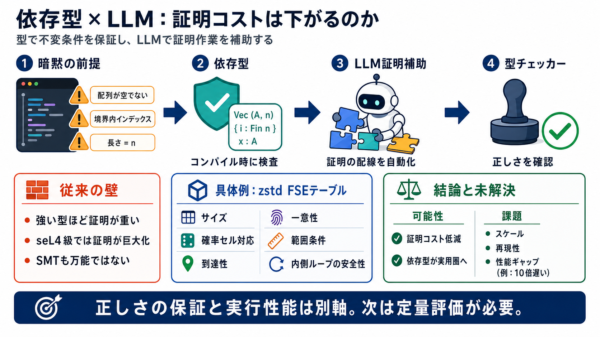

haskell - What is the trade-off between Lazy and Strict/Eager evaluation? - Stack Overflow
Frequently this is when a computation makes a pass over a very large data set; lazily evaluated code might be able to pr…

依存型が日常へ
依存型言語は不変条件を型で保証できますが、従来は「証明に時間がかかる」ことが最大の壁でした。LLMによる証明補助と組み合わせると、その壁が下がる可能性があります。
暗黙の前提ズレ
バイト列の長さが常に n、分岐のとき配列が空でない、インデックス境界が守られる――こうした微妙な前提は実装外に逃げがちです。依存型はこれを「コンパイル時に検査」できます。
強い型＝強い証明
強力な型は検証能力を上げますが、対応する証明作業が重くなり開発コストが高くなりがちでした。seL4の回顧では、証明が設計・実装より大きくなることが報告されています。
“証拠があれば良い”
「主張（仕様）が正しければ、証明の中身は本質的に不要で、“存在”すればよい」という考え方があります。依存型では proof irrelevance が強く意識されますが、現実には証明工学の負荷や計算爆発が残ります。
LLMが配線する
LLMが証明補助を担うと、証明を組み立てる作業が自動化され「型チェッカーの爆発」を回避しやすい場合があります。結果として、依存型が再び実用圏に戻る余地が生まれます。
実例：zstd
LeanでZstandard（zstd）のデコーダ部品、特にFSEテーブル構築を実装し性質を証明する試みが紹介されています。仕様に対応したユニバーサル性質（サイズ、確率セル対応、到達可能性、一意性、範囲条件）を扱います。
証明する中身
過去の教訓
seL4では「設計より証明が重い」ことが現実に起きました（証明コードがCコードより20倍以上などの報告）。SMT自動化も万能ではなく、終わらない／解ける形にする勘が必要な場面があります。
万能ではない
証明不要論（proof irrelevance）に寄せられても、証明工学・型チェッカーの負荷・計算資源は完全には消えません。さらにLLMの有効性は「入力形式・証明方針・探索量」に依存し、定量的な安定性はまだ見えにくいです。
正しさは別軸
LeanでのデコーダはCLIのzstdより10倍遅いと明示されています。依存型は正しさを強く保証できますが、実行性能やスケールは別のトレードオフとして残ります。
検証の線形化
配列インデックスなどの危険箇所を「空でないこと」等で型と証明に押し込むことで、実行時の不確実性を減らせます。ZstandardのFSEでは、仕様対応の性質が“内側ループの脆さ”を支える方向性が具体化されています。
次の測定が必要
LLMによる証明自動化は、依存型の「証明コスト」を現実的に下げる可能性があります。一方でスケール・再現性・性能トレードオフは未解決で、seL4級の現実データと定量評価が次の段階です。
Frequently this is when a computation makes a pass over a very large data set; lazily evaluated code might be able to pr…
2026 [...] 2026 [...] 2026
for large language models (LLMs) due to the requirement for formal proofs to be rig-orously checked by proof assistants,…
| | | --- | | FSE – Journal Issue | Contents - Abstracts - Authors | # FSE – Journal Issue ## Frontmatter ## Resea…
Model Evaluations Persuasion & Influence Benchmarks & Evaluations ##### TamperBench: Systematically Stress-Testing LL…